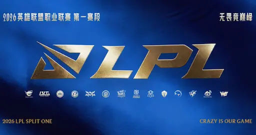

El 6 de marzo de 2026, Top Esports publicó un comunicado oficial en Weibo anunciando que habÃa reportado a su jungla Yang 'naiyou' Zijian a la comisión disciplinaria de la LPL por 'conducta irregular que afecta a la integridad de la competición'. La investigación se inició el 2 de marzo, tras la eliminación del equipo a manos de Weibo Gaming en el Lower Bracket de los Playoffs.
Al dÃa siguiente, el entrenador jefe de TES, Chang 'Poppy' Po-Hao, confirmó en directo que naiyou habÃa confesado haber amañado deliberadamente todos los partidos que TES perdió en la fase de playoffs. 'Si él no hubiese tirado esos partidos, ¿hasta dónde podrÃamos haber llegado? No me lo puedo ni imaginar', declaró Poppy visiblemente afectado.
El top laner Bai '369' Jia-Hao, que dÃas antes habÃa defendido públicamente al jungla en Weibo, publicó un crÃptico 'Soy un payaso...' al conocer la noticia. Según los rumores, fueron el midlaner Creme y el AD carry JiaQi quienes alertaron al CEO del club y amenazaron con ir directamente a la liga si no se actuaba.
El caso se suma a una larga lista de escándalos de amaño en la LPL, que incluye a los exjunglas de FPX Milkyway y Bo Yang-Bo. Ni la LPL ni Riot Games han comunicado aún las sanciones que podrÃa enfrentar naiyou, aunque un ban de por vida es el escenario más probable si los cargos se confirman.